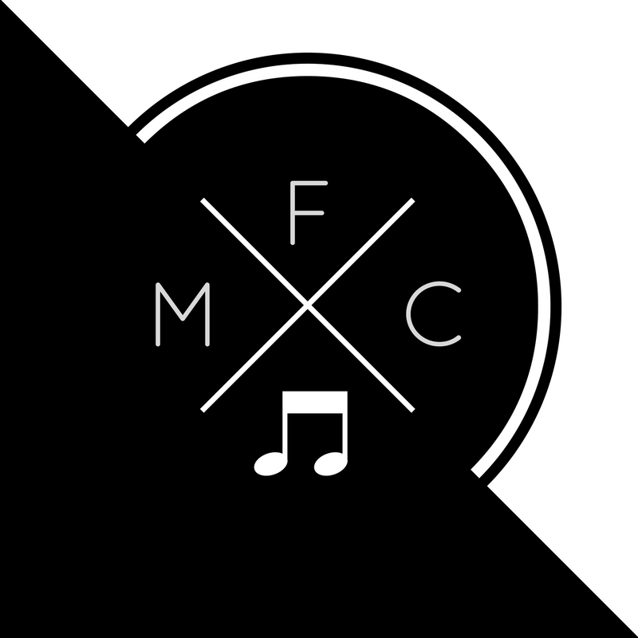

Music for the Community
Thursday Brunch | Rm 77
"Music for Community, or MFC, is a community service club. Our mission is to allow students to share their musical talents and spread their love for music in their local community. Students visit senior centers and nursing homes in their local neighborhood, and they also perform at school events. Instrumentalists and vocalists of all levels are welcome. "
Officer Team: President: Marilyn Zhang, Vice President: Joy Feng, Secretary/Treasurer: Janie Kwong, Public Relations: Vivian Cheng, Activities Coordinator: Joshua Chiang and Rhea Chowdhury
Visit Website